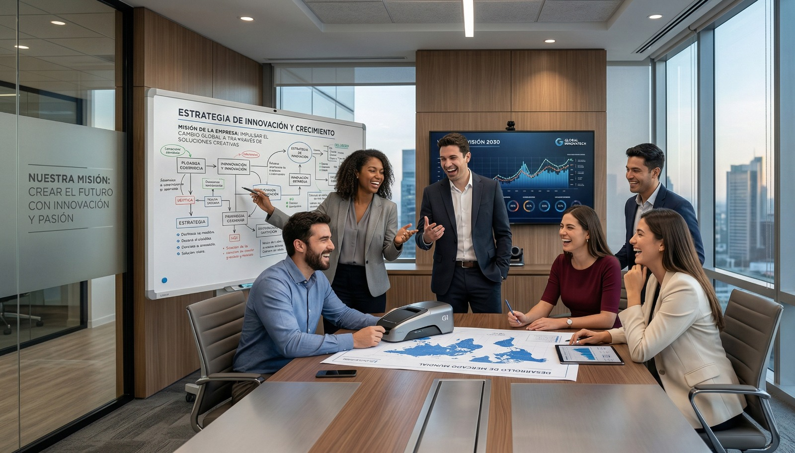
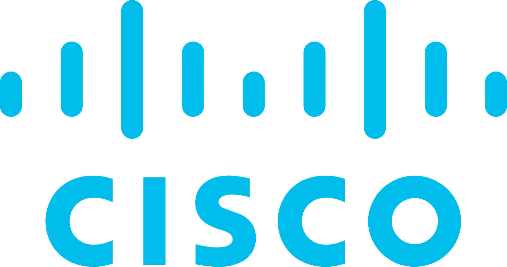
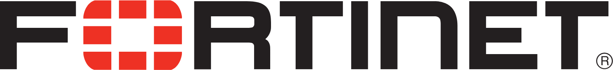
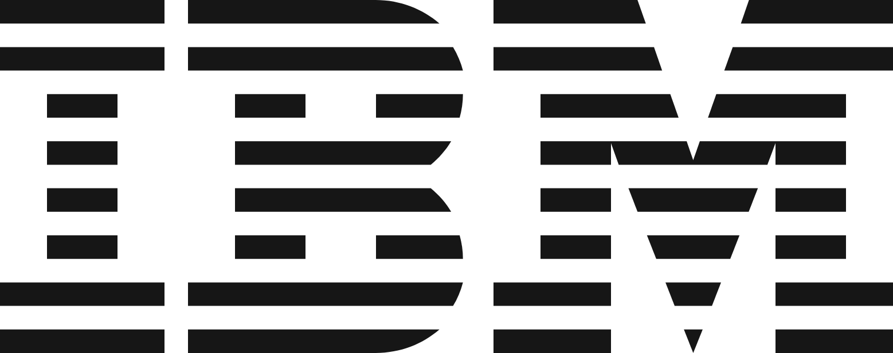

Soluciones integrales diseñadas para impulsar tu transformación digital y optimizar tu infraestructura tecnológica
Diseñamos e implementamos infraestructuras de red de alto rendimiento bajo el paradigma de Confianza Cero (Zero Trust).
Transformamos la seguridad de la información de un gasto operativo a un activo certificable. Aplicamos un rigor de nivel CISA (Certified Information Systems Auditor) para alinear su negocio con los estándares globales más exigentes.
Desarrollo de soluciones a la medida, automatización de procesos y despliegue de software con la seguridad embebida desde la primera línea de código.
Actuamos como su Director de Seguridad de la Información bajo demanda, orquestando la estrategia tecnológica a largo plazo.
No improvisamos en campo. Realizamos la ingeniería arquitectónica de la Capa 1 proyectando su crecimiento operativo.
En un ecosistema donde un segundo de inactividad cuesta millones, tu infraestructura debe ser infalible, segura y escalable. En TITAN IPS no estamos aquí para contarte nuestra historia, sino para proteger y acelerar la tuya. Fusionamos hardware de grado Empresarial/Industrial, logística y ciberseguridad avanzada para que tú solo te preocupes por dominar tu sector.
"Blindar y acelerar las operaciones críticas de nuestros clientes. Transformamos la complejidad tecnológica y logística en infraestructura inquebrantable, garantizando que su negocio nunca se detenga"

"Arquitectar el futuro operativo de la industria. Ser el socio estratégico indiscutible para las corporaciones que exigen dominar sus mercados a través de la superioridad tecnológica"



¿Listo para transformar tu infraestructura? Hablemos